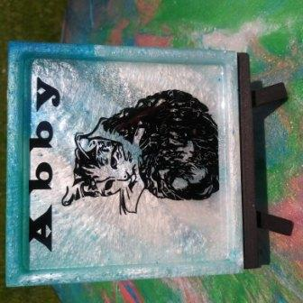

Creating Custom Art with Vinyl Decals on Epoxy Resin
Looking to add some unique flair to your art collection? Custom art with vinyl decals on epoxy resin is a great way to achieve that! Here's how:
- Gather your materials: epoxy resin, vinyl decals, a mixing cup, stirring utensil, and a heat gun or torch.
- Create your design: use a software like Cricut Design Space or draw your design by hand. Be sure to size it appropriately for your project.
- Place your vinyl decals onto your desired surface, making sure they're positioned correctly.
- Mix your epoxy resin according to the instructions on the package.
- Pour your epoxy resin over your surface, covering your vinyl decals completely.
- Use a heat gun or torch to remove any bubbles in your resin.
- Allow your resin to cure for the recommended time.
- Your custom art with vinyl decals on epoxy resin is now ready to display!
Whether you want to create wall art or functional pieces like coasters and trays, custom art with vinyl decals on epoxy resin is a great way to showcase your personal style. Commission an artist or make your own custom art today!